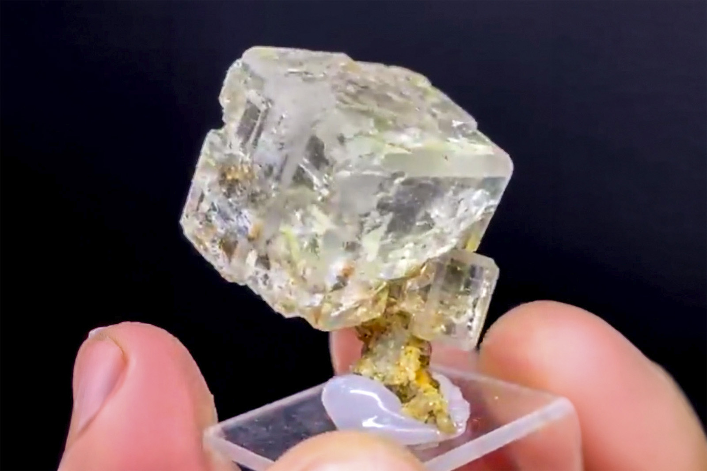

Fluorite
"Water Clear Fluorite on Quartz Stem"
III-09606
2nd Sovetskii Mine, Partizanskoe Pb-Zn deposit (Partizansky), Dalnegorsk, Dalnegorsk Urban District, Primorsky Krai, Russia
Purchased 2/27/2026 from Bobby Holley Fine Minerals for $250.00
Core Collection • In Collection
Details
Storage Type: Drawer
Storage Location: C1D2 The Reserve Miniatures
Size class: Miniature (50)
Dimensions: 2.5 × 2.0 × 3.1 cm
Mass: 24.88 g
Luster: Average, Vitreous